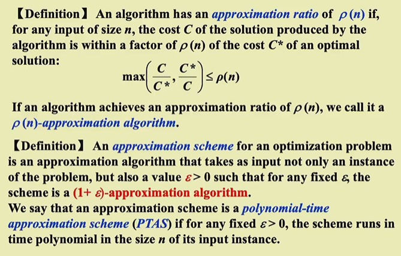

Approximation¶
————Dealing with Hard problems 几种思路： - N很小，及时时间复杂度很差也可以接受 - 在多项式时间里面解决一些special case - 在多项式时间内找出一个近似最优解
1 Approximation Ratio¶
[!note] Definition 
{kind=link}
对于一个优化问题，假设 ( \(\text{OPT}\)) 是最优解的值，( \(\text{ALG}\)) 是近似算法给出的解的值。近似比定义为：
- 对于最小化问题：\([ \text{Approximation Ratio} = \frac{\text{ALG}}{\text{OPT}} ]\)
- 对于最大化问题：\([ \text{Approximation Ratio} = \frac{\text{OPT}}{\text{ALG}} ]\)
其中： - ( \(\text{ALG}\) ) 是近似算法的解的值。 - ( \(\text{OPT}\)) 是最优解的值。
近似比越接近1，表示近似算法的解越接近最优解。一个近似比为 ( \(\rho(n)\) ) 的算法被称为 ( \(\rho(n)\) )-近似算法。
最优解的近似方案(approximation scheme)指的是一类近似算法，它不仅能够将输入作为问题的实例，而且对于任意给定值\(\varepsilon > 0\)，它是一个\((1 + \varepsilon)\)近似算法。
- 多项式时间近似方案(polynomial-time approximation scheme, PTAS)：对于任意给定值\(\varepsilon > 0\)，当输入实例规模为\(n\)时，该方案能在多项式时间内完成计算，时间复杂度可记为\(O(n^{f(\frac{1}{\varepsilon})})\)
- 满多项式时间近似方案(fully polynomial-time approximation scheme, FPTAS)：在PTAS的基础上，要求该方案的运行时间关于\(n\)和\(\varepsilon\)都是多项式级的，时间复杂度可记为\(O(n^{O(1)} (\dfrac{1}{\varepsilon})^{O(1)})\)
- 高效多项式时间近似方案(efficient polynomial-time approximation scheme, EPTAS)：在 PTAS 的基础上，要求该方案的运行时间是与 εε 无关，关于 nn 的多项式时间，即时间复杂度为\(O(n^{O(1)f(\frac{1}{\varepsilon})})\)
Warning
如果A问题能被规约到B，且B问题有一个\(\belta\)-近似算法，那么并不能说明A一定也有一个\(\belta\)近似算法
2 集装箱问题（Approximate Bin Packing）¶
给定 N 个大小分别为 \(S_1,S_2,S_N\) 的物品，满足 \(\forall 1≤i≤N,0<S_i≤1\)，并假设有若干个容量为 1 的桶。现在请你求出能够装下所有物品的最小桶数。
Note
这是一个NPH问题，而其决策版本，给定K个桶，能否装下N个物品是一个NPC问题
2.1 Online Algorithms¶
- Next Fit : 按照输入顺序一个个方物品,\(O(N)\);令M为装下这些物品的最优解桶数，那么该方法所得同属不超过2M-1
- First Fit : 对于当前物品，找到第一个现存的能够容得下它的桶，如果不存在这样的桶再添加新的桶。\(O(NlogN)\),所得桶数不超过\(\frac{17M}{10}\)
- Best Fit: 和FF差不多
对于本题所有的近似算法，得到的近似解桶数至少是最优解的5/3倍
2.2 Offline Algorithms¶
先将物品按大小的非递增顺序排序，然后用FF or BF
FFD所得桶数不超过\(\frac {11M}9+\frac 69\)
3 Knapsack Problems¶
问题： 分数版本的0-1背包问题
按价值密度的降序挑选物品，直到背包被填满
3.1 0-1 version¶
NPH
同上的贪心法是一个2-近似算法
通常解法（dp）：
- 令\(W_{i, p}\)为物品1到物品\(i\)之间的最小质量，总价值为\(p\)
- 分类讨论：
- 取物品\(i\)：\(W_{i, p} = w_i + W_{i - 1, p - p_i}\)
- 不取物品\(i\)：\(W_{i, p} = W_{i - 1, p}\)
- 不可能得到价值\(p\)：\(W_{i, p} = \infty\)
- 状态转移方程为：
Wi,p={∞i=0 Wi−1,ppi>p minWi−1,p,wi+Wi−1,p−piotherwise
- 其中，\(i = 1, \dots, n, p = 1, \dots, np_{\text{max}}\)，因此时间复杂度为\(O(n^2 p_{\text{max}})\)
4 K-center Problems¶
Question
给定\(n\)个地址\(s_1, \dots, s_n\)，在地图上选择\(K\)个中心点\(c\)，使任意地址到离它距离最近的中心点之间的距离中的最大值最小化。

这么说可能不太好理解，下面给出符号化的定义：
本问题提到的距离(distance)不同于图论中边的权重，实际上它就是数学上本来的意思：
- 同一性(identity)：\(dist(x, x) = 0\)
- 对称性(symmetry)：\(dist(x, y) = dist(y, x)\)
- 三角不等式(triangle inequality)：\(dist(x, y) \le dist(x, z) + dist(z, y)\)
令：
- \(dist(s_i, C) = \min\limits_{c \in C} \{dist(s_i, c)\}\)，即\(s_i\)到最近中心点间的距离
- \(r(C) = \max\limits_{i} \{dist(s_i, C)\}\)，即所有中心点中最大的最小覆盖半径
目标：找到一组中心点集\(C\)，使得\(r(C)\)最小化，且保证\(|C| = K\)（\(K\)为常数）
4.1 Naive Greedy¶
- 让第一个中心点作为所有地址的中点
- 随后加入的中心点能够减少r(C)的值
但是在整个点集包括两个相隔很远的子集且K=2时，这种贪心策略就失效了
4.2 2-r Greedy¶
Centers Greedy-2r(Sites S[], int n, int K, double r) {
Sites S`[] = S[]; // S` is the set of the remaining sites
Centers C[] = NULL;
while (S`[] != NULL) {
Select any s form S` and add it to C;
Delete all s` from S` that are at dist(s`, s) <= 2r;
} // end-while
if (|C| <= K)
return C;
else
ERROR("No set of K centers with covering radius at most r");
}
二分法不断减小r的值直到找到合适的r,时间复杂度\(O(log r_{max})\)
- 从输入点集中随机选取第一个点作为第一个中心，然后删除该点为中心，\(2r\)为半径的所有点
- 然后在剩余点中随机选择第二个中心，以此类推
- 如果该\(r\)值确实是最优解，那么这一算法在\(K\)步之内必然停止，且得到的解是最优解的2倍，即该算法是一个2-近似算法
- 定理：假设该算法选择的中心点数超过\(K\)，那么对于任意规模至多为\(K\)的中心点集\(C^_\)，覆盖半径为\(r(C_) > r\)
4.3 Smarter Greedy¶
这个贪心法还可以再改进！还是先给出伪代码：
Centers Greedy-Kcenter(Sites S[], int n, int K) {
Centers C[] = NULL;
Select any s from S and add it to C;
while (|C| < K) {
Select s from S with maximum dist(s, C);
Add s to C;
} // end-while
return C;
}
-
这里的贪心法与上面的贪心法区别在于：后者是任意选取输入点集中的点作为中心点，而前者的策略是：
- 第一个点还是任意取的
- 之后选择离中心点集中的点尽可能远的点作为新的中心点，这样的选择方法更加聪明些
- 循环\(K\)遍就结束循环了
- 定理：该算法返回包含规模为\(K\)的中心点集\(C\)，使得\(r(C) \le 2r(C^_)\)，其中\(C^_\)表示最优中心点集
-
很可惜的是，这种做法属于“换汤不换药”，本质上依旧是一个2-近似算法。
很遗憾的是，对于该问题（中间选择问题），不存在\(\rho < 2\)的近似算法